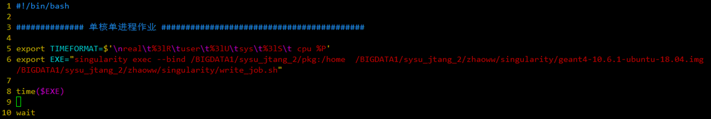
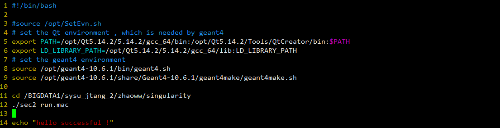

一次构建，到处运行！
singularity是一个容器平台，或者说是一个容器软件。singularity允许您创建和运行容器，在容器内安装调试软件，以可移植、可重现的方式打包软件。您可以在本地计算机使用singularity构建容器，然后在其他任何安装有singularity软件的地方运行容器及其内部的软件，完全不需要担心操作系统和生产环境。
singularity开始于2015年，美国劳伦兹伯克利国家实验室的 Gregory Kurtzer 发布了第一版singularity，采用BSD协议分发。2018年8月，singularity 3.0 版本之后采用Go语言编写。
singularity广泛用于高性能计算群集、超级计算机、高等院校、科研机构、企业群集、单个服务器和云计算，阿里云和Azure都已经支持运行用户的singularity容器。
singularity专长于超级计算机的科学计算，支持MPI并行编程，与主流的作业调度系统无缝衔接！
singularity采用Go语言编写，所以需要先安装Go语言编译器再编译singularity。
根据官网的说法，需要安装以下依赖：
不过根据我编译的经验，可以直接忽略这一步。可能系统已经安装过这些软件包，如果您不放心，可以再次安装它们。
下载安装包：
wget https://dl.google.com/go/go1.11.linux-amd64.tar.gz
解压安装包：
sudo tar -xzvf go1.11.linux-amd64.tar.gz -C /usr/local
amd64表示64位的计算机，由于是AMD最先开发出的64位CPU，故此命名；但是Intel公司称之为x86_64或者x64，而x86表示32位的CPU。
设置环境变量：
echo 'export GOPATH=${HOME}/go' >> ~/.bashrc
echo 'export PATH=/usr/local/go/bin:${PATH}:${GOPATH}/bin' >> ~/.bashrc
source ~/.bashrc
下载安装包：
mkdir -p $GOPATH/src/github.com/sylabs
cd $GOPATH/src/github.com/sylabs
wget https://github.com/sylabs/singularity/archive/v3.0.2.tar.gz
解压安装包：
tar -xzf singularity-3.0.2.tar.gz
配置（安装到/opt目录）：
cd ./singularity
./mconfig --prefix=/opt/singularity
编译安装：
make -C ./builddir
sudo make -C ./builddir install
添加Tab补全
/etc/profile添加. /usr/local/etc/bash_completion.d/singularity
添加sudo命令：/etc/sudoers添加singularity路径
singularity镜像是一般情况无法修改，即使可以读写也无法保存，但是却保持稳定性，所以镜像一般用作封装好软件后的“到处运行”。
为了克服镜像无法修改的特点，沙盒概念出现。沙盒相当于一个与本机隔绝的操作系统，用户可以读写并保存，进而制成镜像“到处运行”。
镜像可以从dockerhub、singularityhub和ContainerLibrary下载。
下载镜像：
sudo singularity build lolcow.simg library://sylabs-jms/testing/lolcow
sudo singularity build lolcow.sif docker://godlovedc/lolcow
由于docker已经很成熟了，所以从dockerhub下载很不错。
构建沙盒：
sudo singularity build Ubuntu docker://Ubuntu
但是不需要sudo来构建仿佛也没问题，为了以后出现权限问题，这里建议不使用sudo创建沙盒。（存疑）
singularity build --sandbox Ubuntu docker://ubuntu
虽然命令选项很多，但是我们记住一个就够用了：
sudo singularity shell -w --bind /home/outside:/container/inside Ubuntu
首先，“沙盒内外权限一致”，如果使用sudo进入沙盒，那么沙盒内您就是root权限；如果您普通权限进入沙盒，那么沙盒内您就是一般权限。
其次，-w 表示可以对沙盒进行读写，并且操作会被保存。
然后，--bind 表示绑定或者下载，冒号（:）左侧表示沙盒外路径，右侧表示沙盒内路径，当你访问沙盒内此路径时，呈现的内容就是本机此路径的内容。此举沟通沙盒内外。
最后，Ubuntu表示沙盒，也可以使用镜像，只不过 -w 不起作用了。
进入沙盒内，你会发现就好像进入另一个操作系统，你可以在其中自由发挥，安装卸载任何软件。
将沙盒打包成镜像：
sudo singularity build ubuntu.img Ubuntu
注意，此时一定要用root权限，不然无法完全打包沙盒！
将镜像转移到其他环境，比如计算集群、服务器、天河二号等。
登录天河二号需要先登录天河二号专属VPN，再登录天河二号超级计算机。
VPN账号密码由用户组共享，如果您是子账户，那么请找您的主账户所有人寻求账号密码。
关于VPN的使用方法，请查找山石VPN使用手册，该手册随获取天河二号账号的邮件分发，如有需要请联系主账户所有人或本人。
值得注意的是，使用Linux登录vpnc需要重新设置网关，不然只能登录天河二号，无法访问外网。
网关设置方法：
（1）在能正常上网时先获取本地网关：
route –n ，然后看Gateway一列
（2）在成功连接VPN之后添加两条明细路由:
route add default gw X.X.X.X(原来正常上网的本地网关)
route add -host 172.16.22.11 gw 172.16.3.254
这是最直接、最好理解的办法，但是缺点很明显：不允许关闭终端，难以大规模并行。
（1）申请一个计算节点：
yhalloc -N 1 -p rhenv
singularity shell --bind /BIGDATA1/sysu_jtang_2/pkg:/home geant4-10.6.1-ubuntu-18.04.img
进入容器之后就能正常操作Geant4了。
yhbatch -N 1 -n 1 -c 24 -p rhenv sub_this.sh
其中sub_this.sh写着：
在sub_this.sh里面的write_this.sh写着：
write_this.sh写入的就是在容器里面需要执行的命令。
不推荐这种方法。
故此不列。
赵问问：
邮箱：zhaoww2013@126.com ; zhaoww1998@outlook.com
singularity！